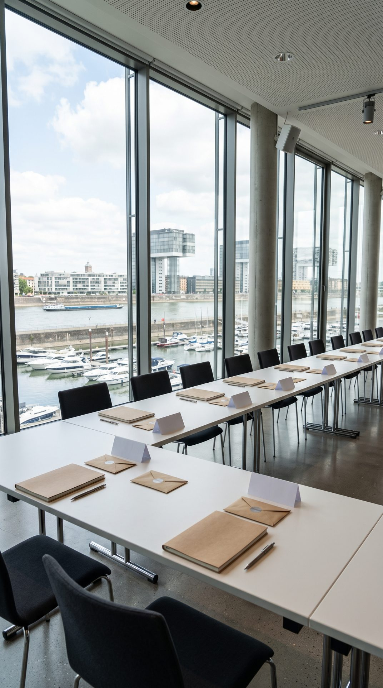

Dezember 2026 · Anmeldung geöffnet · in Köln
25 Change Management Experts
- 03./04. Dezember 2026
- SESSEL HUB Rheinauhafen, Köln
- 450 € netto
25 Fachleute aus dem Change Management bei unterschiedlichen Versicherern, Maklerpools und Versicherungsvertrieben, jede und jeder mit genau einer offenen Frage. Am Tisch sitzt die erste und zweite Führungsebene (Team-, Abteilungs- und Bereichsleitung sowie Vorstandsassistenz) aus Versicherern, Maklerpools und Versicherungsvertrieben. Du sollst Dein Haus durch eine Veränderung führen, deren Tempo und Richtung Du nicht bestimmst, und die Werkzeuge, mit denen Du Akzeptanz erzeugen sollst, verändern gleichzeitig Deine eigene Rolle. Anderthalb Tage daran, mit ChatGPT und Claude am Tisch.
